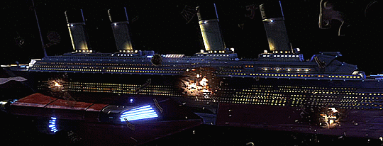
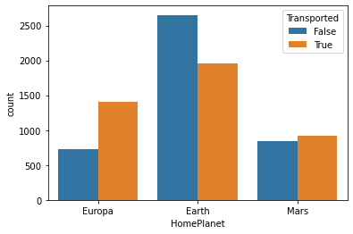
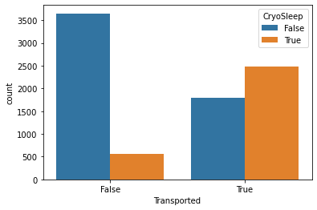
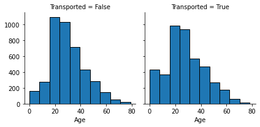
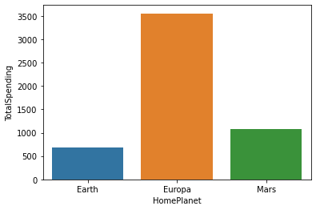
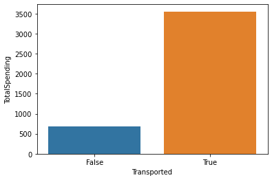
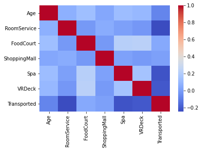

Spaceship Titanic Passanger Classification
In this data science and machine learning project, I analysed a dataset about spaceship passengers and built a predictive model to determine if a passenger could board the ship. By sifting through complex data, I uncovered insights about why some passengers were denied boarding. In the end, the predictive model I built was able to accurately determine which passengers could board the spaceship, ensuring the safety of all on board. Click here for the full Juypter Notebook link of the project.
Problem Definition
In the year 2307, the spaceship Titanic was on a routine journey through the galaxy when disaster struck. The ship was hit by an unexpected meteor shower, causing severe damage to the hull and critical systems. The crew immediately activated the emergency protocols, initiating the evacuation of all passengers and crew. The goal of the project is to determine a pattern to see if some passengers have a certain advantage or disadvantage of boarding the evacuation ships and create a machine learning model which could predict that. Some of the question asked before the analysis are:
Tools/Libraries used
Data Source and Data Description
The Spacehip Titanic dataset is a Kaggle competition dataset based on the famous original Titanic dataset, this time set in future. The dataset is described as follows:
Exploratory Data Analysis
Throughout the EDA I focused mostly on figuring what are the main features which would make a person more likely to be transported. All of the EDA was done in Python with Matplotlib and Seaborn libraries. Looking at the total count of people by their homeplanet of origin it is possible to conclude that most of the people are from the planet "Earth" and thus a lot of those people were able to be transported. But people from the planet "Europa" statistically had a bigger change of surviving as almost twice ammount of people managed to be transported.
Another interesting insight is the fact that the majority of the people who were in cryosleep during the incident were succesfully transported. Perhaps the passengers who were in cryosleep has an advantage of being transported before anyone else. Whatever is the case it turns out to be an advantage of being put into cryosleep during travel.
The next graph reveals that a higher proportion of younger people (under 20 years) were successfully tranported which suggest children and teens had an advantage of being transported than other people.
In the next few graphs I will take a look at the spendings of the passengers, trying to figure out if the richer people has some kind of advantage of being transported. It turns out that people from the planet "Europa" were spending the most, suggesting that the planet is inhibited by the wealthier passengers in comparison to the other planets, having also in mind that most people are not from planet "Europa". This also correlates with the first insight where people from the planet "Europa" has a bigger chance of being transported. This all suggest that the wealthier people have an advantage of being successfully transported.
 The last step before making a machine learning model is to take a look at the correlations between the variables and make sure there are no higly correlated variables which could cause issues with the model. But it turns out all of the varibles have a very low correlation between each other and thus we are accepting them into out model.
Data Modelling
There are some categorical variables in the dataset which need to be transformed into a data type which the machine can understand. For that I will use the function .get_dummies() to turn each category into a seperate column with a 1 or 0 in each row indicating if the variable is present in the row.
planet_train = pd.get_dummies(train_df['HomePlanet'],drop_first=True)
planet_test = pd.get_dummies(test_df['HomePlanet'],drop_first=True)
destination_train = pd.get_dummies(train_df['Destination'],drop_first=True)
destination_test = pd.get_dummies(test_df['Destination'],drop_first=True)
cabin_d_train = pd.get_dummies(train_df['CabinDeck'],drop_first=True)
cabin_d_test = pd.get_dummies(test_df['CabinDeck'],drop_first=True)
cabin_s_train = pd.get_dummies(train_df['CabinSide'],drop_first=True)
cabin_s_test = pd.get_dummies(test_df['CabinSide'],drop_first=True)After that I drop all the unecessary columns, seperate the X and the Y variable and do a train test split using the sklearn function. For this model I used a 80/20 split where 80% of the data is the training data while 20% is the testing data. As for the machine learning models, for this project I toyed with all kinds of models seeing what results I will get. In total I compared a Logistic Regression, Random Forest Classifier, SVM, XGB Classifier and ANNs. All of the models did pretty well, and a lot of them had a very similiar final score. The scoring table is as follows:
| Model | Accuracy |
|---|---|
| Logistic Regression | 0.7779 |
| Random Forest | 0.8033 |
| SVM | 0.7612 |
| XGB Classifier | 0.8039 |
| ANN | 0.8016 |
As we can see the Random Forest Classifier, XGB Classifier and ANN all did very well in predicting if a passenger will get transported or not, with an average score of around 0.80.
Conclusion and key takeaways
Through data analysis we were able to gather interesting insight about a persons chances of being transported from the spaceship Titanic. If I was a passenger on the spaceship I would have better chances of being transported if:
Weaknesses and what can be improved